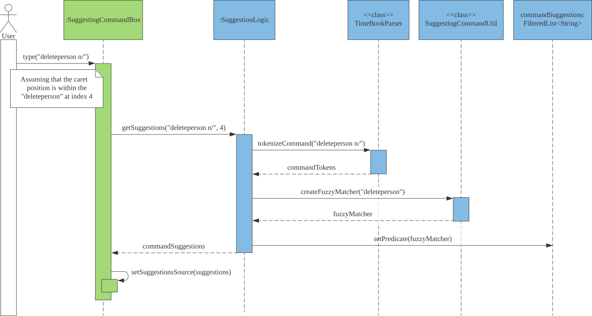

By: Team SE-EDU Since: Jun 2016 Licence: MIT
- 1. Setting up
- 2. Design
- 3. Implementation
- 3.1. [Proposed] Finding Free Timeslot feature
- 3.2. [Proposed] Undo/Redo feature
- 3.3. Command Suggestions feature
- 3.4. [Proposed] Data Encryption
- 3.5. Logging
- 3.6. Configuration
- 3.7. Visual Representation of individual’s or group’s schedule
- 3.8. Closest Common Location
- 3.9. Add NUSMods To Schedule
- 3.10. External APIs
- 4. Documentation
- 5. Testing
- 6. Dev Ops
- Appendix A: Product Scope
- Appendix B: User Stories
- Appendix C: Use Cases
- Appendix D: Non Functional Requirements
- Appendix E: Glossary
- Appendix F: Product Survey
- Appendix G: Instructions for Manual Testing
1. Setting up
Refer to the guide here.
2. Design
2.1. Architecture

The Architecture Diagram given above explains the high-level design of the App. Given below is a quick overview of each component.
|
Tip
|
The .puml files used to create diagrams in this document can be found in the diagrams folder.
Refer to the Using PlantUML guide to learn how to create and edit diagrams.
|
-
At app launch: Initializes the components in the correct sequence, and connects them up with each other.
-
At shut down: Shuts down the components and invokes cleanup method where necessary.
Commons represents a collection of classes used by multiple other components.
The following class plays an important role at the architecture level:
-
LogsCenter: Used by many classes to write log messages to the App’s log file.
The rest of the App consists of four components.
Each of the four components
-
Defines its API in an
interfacewith the same name as the Component. -
Exposes its functionality using a
{Component Name}Managerclass.
For example, the Logic component (see the class diagram given below) defines it’s API in the Logic.java interface and exposes its functionality using the LogicManager.java class.

How the architecture components interact with each other
The Sequence Diagram below shows how the components interact with each other for the scenario where the user issues the command delete 1.

delete 1 commandThe sections below give more details of each component.
2.2. UI component

API : Ui.java
The UI consists of a MainWindow that is made up of parts e.g.CommandBox, ResultDisplay, PersonListPanel, StatusBarFooter etc. All these, including the MainWindow, inherit from the abstract UiPart class.
The UI component uses JavaFx UI framework. The layout of these UI parts are defined in matching .fxml files that are in the src/main/resources/view folder. For example, the layout of the MainWindow is specified in MainWindow.fxml
The UI component,
-
Executes user commands using the
Logiccomponent. -
Listens for changes to
Modeldata so that the UI can be updated with the modified data.
2.3. Logic component
API :
Logic.java
-
Logicuses theAddressBookParserclass to parse the user command. -
This results in a
Commandobject which is executed by theLogicManager. -
The command execution can affect the
Model(e.g. adding a person). -
The result of the command execution is encapsulated as a
CommandResultobject which is passed back to theUi. -
In addition, the
CommandResultobject can also instruct theUito perform certain actions, such as displaying help to the user.
Given below is the Sequence Diagram for interactions within the Logic component for the execute("delete 1") API call.

delete 1 Command|
Note
|
The lifeline for DeleteCommandParser should end at the destroy marker (X) but due to a limitation of PlantUML, the lifeline reaches the end of diagram.
|
2.4. Model component

API : Model.java
The Model,
-
stores a
UserPrefobject that represents the user’s preferences. -
stores the Address Book data.
-
exposes an unmodifiable
ObservableList<Person>that can be 'observed' e.g. the UI can be bound to this list so that the UI automatically updates when the data in the list change. -
does not depend on any of the other three components.
|
Note
|
As a more OOP model, we can store a Tag list in Address Book, which Person can reference. This would allow Address Book to only require one Tag object per unique Tag, instead of each Person needing their own Tag object. An example of how such a model may look like is given below.
|
2.5. Storage component

API : Storage.java
The Storage component,
-
can save
UserPrefobjects in json format and read it back. -
can save the Address Book data in json format and read it back.
2.6. Common classes
Classes used by multiple components are in the seedu.addressbook.commons package.
3. Implementation
This section describes some noteworthy details on how certain features are implemented.
3.1. [Proposed] Finding Free Timeslot feature
3.1.1. Proposed Implementation
The finding free timeslot feature is implemented by ScheduleGenerator. It generates the current WeekSchedule of a group and the common free timeslot among its members and updates the ScheduleView to be displayed to the user. Additionally, it implements the following operations:
-
ScheduleGenerator#getFreeTimeslot()— Generates apersonScheduleof a group and updates theScheduleView.
These operations are exposed in the Model interface as Model#getFreeTimeslot()
Firstly, the getFreeTimeslot() method takes in as input an ArrayList of Person and updates the ScheduleView of the TimeBook. When the method is executed, it checks the schedule of each Person in the TimeBook and generates a new combined WeekSchedule of the whole list of Person. Also, only TimeSlots that are within the week are checked and put into the 'WeekSchedule'. The generated WeekSchedule will then contain the individual schedules of each Person in the list for the week.
After the WeekSchedule has been generated, the method now generates a new schedule of the free timeslots within the WeekSchedule. It checks the WeekSchedule and generates a new FreeTimeSchedule with contains all the timeslots in which there are no clashes with the personSchedule. It also only generates FreeTimeslots for the week.
Additionally, the generated FreeTimeSchedule also contains the information of the last venue the Person has been. This information is then used to calculate the closest location for all Person to meet.
Finally, after generating the WeekSchedule and FreeTimeSchedule, it now updates the ScheduleView of TimeBook. This 'ScheduleView' is then displayed to the user through the UI.
The following sequence diagram shows how the generateFreeTimeslot operation works:
3.1.2. Design Considerations
Aspect: How the WeekSchedule is generated and stored
-
Alternative 1 (current choice): Generates the
WeekScheduleonly when theShowGroupcommand is executed.-
Pros: Saves memory space, and does not need to compute the
WeekScheduleof every group upon startup. -
Cons: May have performance issues in runtime as there is no preprocessing as the
WeekScheduleis only generated when required.
-
-
Alternative 2: Upon startup, generate each Group’s
WeekScheduleand store them within theGroupobject.-
Pros: Better runtime performance as the
WeekScheduleis already generated. -
Cons: Will have perfomance issues in terms of memory usage. Each Group’s
WeekSchedulewill also have to be updated whenever aPersonis added, edited or deleted.
-
3.2. [Proposed] Undo/Redo feature
3.2.1. Proposed Implementation
The undo/redo mechanism is facilitated by VersionedAddressBook.
It extends AddressBook with an undo/redo history, stored internally as an addressBookStateList and currentStatePointer.
Additionally, it implements the following operations:
-
VersionedAddressBook#commit()— Saves the current address book state in its history. -
VersionedAddressBook#undo()— Restores the previous address book state from its history. -
VersionedAddressBook#redo()— Restores a previously undone address book state from its history.
These operations are exposed in the Model interface as Model#commitAddressBook(), Model#undoAddressBook() and Model#redoAddressBook() respectively.
Given below is an example usage scenario and how the undo/redo mechanism behaves at each step.
Step 1. The user launches the application for the first time. The VersionedAddressBook will be initialized with the initial address book state, and the currentStatePointer pointing to that single address book state.

Step 2. The user executes delete 5 command to delete the 5th person in the address book. The delete command calls Model#commitAddressBook(), causing the modified state of the address book after the delete 5 command executes to be saved in the addressBookStateList, and the currentStatePointer is shifted to the newly inserted address book state.

Step 3. The user executes add n/David … to add a new person. The add command also calls Model#commitAddressBook(), causing another modified address book state to be saved into the addressBookStateList.
|
Note
|
If a command fails its execution, it will not call Model#commitAddressBook(), so the address book state will not be saved into the addressBookStateList.
|
Step 4. The user now decides that adding the person was a mistake, and decides to undo that action by executing the undo command. The undo command will call Model#undoAddressBook(), which will shift the currentStatePointer once to the left, pointing it to the previous address book state, and restores the address book to that state.

|
Note
|
If the currentStatePointer is at index 0, pointing to the initial address book state, then there are no previous address book states to restore. The undo command uses Model#canUndoAddressBook() to check if this is the case. If so, it will return an error to the user rather than attempting to perform the undo.
|
The following sequence diagram shows how the undo operation works:

|
Note
|
The lifeline for UndoCommand should end at the destroy marker (X) but due to a limitation of PlantUML, the lifeline reaches the end of diagram.
|
The redo command does the opposite — it calls Model#redoAddressBook(), which shifts the currentStatePointer once to the right, pointing to the previously undone state, and restores the address book to that state.
|
Note
|
If the currentStatePointer is at index addressBookStateList.size() - 1, pointing to the latest address book state, then there are no undone address book states to restore. The redo command uses Model#canRedoAddressBook() to check if this is the case. If so, it will return an error to the user rather than attempting to perform the redo.
|
Step 5. The user then decides to execute the command list. Commands that do not modify the address book, such as list, will usually not call Model#commitAddressBook(), Model#undoAddressBook() or Model#redoAddressBook(). Thus, the addressBookStateList remains unchanged.

Step 6. The user executes clear, which calls Model#commitAddressBook(). Since the currentStatePointer is not pointing at the end of the addressBookStateList, all address book states after the currentStatePointer will be purged. We designed it this way because it no longer makes sense to redo the add n/David … command. This is the behavior that most modern desktop applications follow.

The following activity diagram summarizes what happens when a user executes a new command:

3.2.2. Design Considerations
Aspect: How undo & redo executes
-
Alternative 1 (current choice): Saves the entire address book.
-
Pros: Easy to implement.
-
Cons: May have performance issues in terms of memory usage.
-
-
Alternative 2: Individual command knows how to undo/redo by itself.
-
Pros: Will use less memory (e.g. for
delete, just save the person being deleted). -
Cons: We must ensure that the implementation of each individual command are correct.
-
Aspect: Data structure to support the undo/redo commands
-
Alternative 1 (current choice): Use a list to store the history of address book states.
-
Pros: Easy for new Computer Science student undergraduates to understand, who are likely to be the new incoming developers of our project.
-
Cons: Logic is duplicated twice. For example, when a new command is executed, we must remember to update both
HistoryManagerandVersionedAddressBook.
-
-
Alternative 2: Use
HistoryManagerfor undo/redo-
Pros: We do not need to maintain a separate list, and just reuse what is already in the codebase.
-
Cons: Requires dealing with commands that have already been undone: We must remember to skip these commands. Violates Single Responsibility Principle and Separation of Concerns as
HistoryManagernow needs to do two different things.
-
3.3. Command Suggestions feature
3.3.1. Implementation
The command suggestions mechanism is facilitated by SuggestionLogic.
Through user-interface events provided by SuggestingCommandBox, it parses the command that was entered to provide context-sensitive suggestions.
It does this by identifying the commandWord (e.g. findperson, addperson, etc.) and arguments provided (e.g. n/Alice, g/CS2103T) and by using the caret position, provides command suggestions if the caret is located within the commandWord section or provides argument-specific suggestions by delegating to the Suggester registered for the specific commandWord.
Given below is an example usage scenario and how the command suggestions mechanism behaves at each step.
Step 1. The user types in the command findperson n/| and the CommandSuggestionBox UI class passes the command text (i.e. findperson n/) and the caret position index (i.e. 13) to SuggestionLogic.
|
Note
|
The vertical line/pipe character (i.e. |) denotes the position of the caret and is not part of the entered command itself.So for the above example, the command entered is findperson n/ with the caret at the end of the command.
|

Step 2. The SuggestionLogic asks the AddressBookParser to tokenize the command text into its two parts: the commandWord and the arguments. This is needed so the SuggestionLogic knows which Suggester to use later.

Step 3. The SuggestionLogic then checks where the caret is currently positioned, either within the commandWord or within the arguments section. In this case, the caret is placed after the n/ so it is within the arguments section. To read how the behaviour changes if the caret was placed within the commandWord section, click here.

Step 4. The SuggestionLogic asks the static Suggester class which Prefixes are supported by the current commandWord (i.e. findperson) for tokenizing the arguments. This list of supported Prefixes, together with the command arguments, are passed to the static ArgumentTokenizer to parse it into an ArgumentList containing CommandArguments. Each CommandArgument contains the type of Prefix and the user-entered value.

Step 5. The SuggestionLogic then asks the static Suggester class to create the relevant Suggester object based on the commandWord. In this case, the static Suggester class returns a new FindPersonSuggester because the commandWord is findperson.

Step 6. The SuggestionLogic asks the ArgumentList object which CommandArgument is currently selected based on the user’s caret position. In this case, it is the CommandArgument with the Prefix of PERSON_NAME and value of an empty string because the caret is positioned within the n/ text and no value has been entered.

Step 7. The SuggestionLogic asks for the suggestions from the FindPersonSuggester by providing three things to it. First, the current Model object, second the previously parsed ArgumentList object and finally, the CommandArgument to provide suggestions for. After obtaining the list of suggestions, the SuggestionLogic class returns it to the CommandSuggestionBox UI class for display.

The following sequence diagram condenses all the above diagrams into one, given the input findperson n/|:

The SuggestionLogic behaves differently when the caret position is within the commandWord section. The sequence diagram below shows the behaviour for the case of find|person n/. To read how the behaviour changes if the caret was placed within the arguments section, click here.

The following activity diagram summarizes what happens when a user interacts with the command input box:

3.3.2. Design Considerations
Aspect: How command suggestions gets its suggestions
-
Alternative 1 (current choice): Ask
Suggesters for suggestions every time anything changes-
Pros: Easy to implement.
-
Cons: May have performance issues in terms of CPU and memory usage as
Suggesters are created and run every time the command changes or the caret is moved.
-
-
Alternative 2: Cache suggestions based on entered command and caret position
-
Pros: Will use less CPU, may use less memory.
-
Cons: Difficult to properly account for all the conditions that should cause a cache invalidation/recalculation of suggestions.
-
Aspect: Data structure to pass around the command arguments
-
Alternative 1 (current choice): Create an
ArgumentListto store the ordered sequence of arguments.-
Pros: Provides
Suggesters with flexibility in providing suggestions since the relative ordering of arguments is preserved. For example, it is possible to suggest different values for eachclass/argument based on the left-closestmod/argument for the following command:addmod n/Alice mod/CS2103T class/ mod/CS2101 class/. -
Cons: Increased complexity in extracting command arguments for simpler
Suggesters.
-
-
Alternative 2: Reuse
ArgumentMultimap-
Pros: We do not need to maintain a separate data structure due to reuse, and developers familiar with how
ArgumentTokenizer.tokenize()works for writing aCommandcan transfer their knowledge when writingSuggesters for their own commands. -
Cons:
Suggesters are restricted in terms of the flexibility of their suggestions, as they lack info about the relative ordering of all the arguments.
-
3.4. [Proposed] Data Encryption
{Explain here how the data encryption feature will be implemented}
3.5. Logging
We are using java.util.logging package for logging. The LogsCenter class is used to manage the logging levels and logging destinations.
-
The logging level can be controlled using the
logLevelsetting in the configuration file (See Section 3.6, “Configuration”) -
The
Loggerfor a class can be obtained usingLogsCenter.getLogger(Class)which will log messages according to the specified logging level -
Currently log messages are output through:
Consoleand to a.logfile.
Logging Levels
-
SEVERE: Critical problem detected which may possibly cause the termination of the application -
WARNING: Can continue, but with caution -
INFO: Information showing the noteworthy actions by the App -
FINE: Details that is not usually noteworthy but may be useful in debugging e.g. print the actual list instead of just its size
3.6. Configuration
Certain properties of the application can be controlled (e.g user prefs file location, logging level) through the configuration file (default: config.json).
3.7. Visual Representation of individual’s or group’s schedule
A separate class ScheduleView will be created to facilitate the creation of the schedule view belonging to individuals and groups.
Depending on the constructor used in this class, different types of schedules will be shown. There are two types of constructors:
* ScheduleView(WeekSchedule personSchedule) This constructor is used to construct a schedule view of an individual.
* ScheduleView(List<WeekSchedule> personSchedules, List<String> colors, WeekSchedule freeSchedule) This constructor is used to construct a schedule view of a group
These methods are used in the MainWindow class, where MainWindow will display instances of ScheduleView when various commands are performed.
Given below is an example of how the Nodes (containers) in MainWindow changes with respect to the show command.
Step 1. After the user launches the application, the MainWindow will consist of 4 main Nodes: CommandBox, TabsPanel, ResultDisplay and DefaultDetailWindow.

Step 2a. Suppose the user has a friend named Ben in the application. The user executes show n/ Ben in order to view Ben’s details
and his schedule. The state of MainWindow will now have another set of 4 Nodes: CommandBox, ResultDisplay, ScheduleView and PersonDetailCard.
Step 2b. Alternatively, suppose the user has a group named CS2103T team project. The user executes show g/ CS2103T team project in
order to view the group’s schedule and information. The state of MainWindow will now have a different set of 4 Nodes: CommandBox, ScheduleView,
ResultDisplay and GroupInformation
|
Note
|
If the user keys in a name or group that is not present in the application, a CommandException will be thrown to indicate that such name or group is not found in the application. |
The following sequence diagram shows how the show command eventually lead to changes in the UI to show the visual representation of an individual’s or group’s schedule.


3.7.1. Design Considerations
Aspect: User experience of the schedule view.
-
Alternative 1 (current choice): Use a separate container for headers and schedule contents (table cells & blocks).
-
Pros: User can read the schedule in our application a lot more easier.
-
Cons: Duplicated codes in the ScheduleView class to generate the separate containers.
-
-
Alternative 2: A single container to contain the schedule view.
-
Pros: Easier to implement, lesser lines of codes.
-
Cons: UX will decrease due to increase difficulty to read schedules in the application.
-
Aspect: Amount of detail present in schedule view.
-
Alternative 1: Enable users to see schedules up to 1 week in advance.
-
Pros: Easy to implement.
-
Cons: Users may experience difficulty to plan meetings 2 or more weeks in advance.
-
-
Alternative 2 (current choice): Enable users to see schedules up to 4 weeks in advance.
-
Pros: Most users will be able to plan most of their meetings. (Up to 1 month in advance).
-
Cons: Slightly more challenging to implement in order to make sure that the schedule view is not cluttered.
-
Aspect: Color schemes for time slot blocks in schedule view.
-
Alternative 1 (current choice): Select 10 good contrast colours to dark theme for schedules.
-
Pros: More aesthetically pleasing to the user.
-
Cons: Groups that have more than 10 members will have the same colours for their schedule.
-
-
Alternative 2: Randomly generate colours depending on group size.
-
Pros: All members in a group will very likely have different colours to indicate their schedule.
-
Cons: Schedules with darker colours cannot be seen from a dark theme UI.
-
3.8. Closest Common Location
Closest common location utilises Google Maps Api to get the best center location to meet for a group project meeting. We define this location as Closest Common Location.
3.8.1. Definition
-
Due to connectivity constraints, we cannot support location outside of NUS. All locations have to follow the spelling and format in NUSMods.
-
The closest location is the location that has the least average travelling time by car from the various sources.
-
All invalid location are omitted during as the source location will not be considered.
3.8.2. Algorithm
-
Create a complete graph where the vertices are the different locations in NUS and edges are the respective travelling time by car from location
utov -
Represent this graph in a v x v matrix where
irepresents the source location andjrepresent destination location anddistanceMatrix[i][j]represent the time needed to travel fromitoj -
To get the closest common location of S1 … Sn:
-
Get the rows i = S1 … Sn
-
Sum the values of the rows to a new row
totalDistance -
The smallest value in the row is the closest common location
-
Below is an example of how the algorithm is applied on arbitrary vertices l1…ln to compute the closest common location
for l2,ln-2 and ln1.

3.8.3. Implementation
ln-2.Consideration
-
Google Maps Api only provides free $400 credit per account and every 1000 API call cost USD$10-USD$20.
-
Google Maps Distance Matrix Api has a limit of 100 elements for every API call.
-
Google Maps Api has bug
-
Inconsistency in the identifying locations. Example
-
NUS_LT17identified as the correct location andLT17is not. -
NUS_AS6is not identified as the correct location butAS6is identified as the correct location.
-
-
Certain locations are not supported by Google Maps
-
S4andS6is identifiable butS5is not.
-
-
Some locations are valid on Google Maps Places Api but not on Google Maps Distance Matrix Api.
-
-
Not all venues on NUSMods are identifiable on Google Maps Api.
-
Some venues on NUSMods are in the same building(ie AS6-0213 and AS6-0214).
Implementation
The image below represents the Class Diagram for Closest Common Location component of TimeBook
There are 3 main aspects to the implementation
-
External API
-
Creating the matrix
-
Getting the closest location
External API
To support the limited internet connection, we preprocess the relevant data and save it into the resources directory (See External APIs).
3.8.4. Creating matrix
This is the sequence diagram for the creation of the matrix.

Brief overview The initialising of the matrix is broken into 2 steps. The first step is to get the list of locations in NUSMods and checking against google maps API if that location is identifiable by google. The second step is to use the identifiable location to construct the matrix.
Steps
-
Check if the name of the location in NUSMods is identifiable on google maps.
ProcessVenues#processis the driver for this step.-
Call NUSMods api with
Cache#loadVenuesto get an array of Venues(String) in NUS, -
Iterate through each venue and sanitize it to Google Maps Identifiable location.
-
Sanitizes the location name given by NUSMods by appending
NUS_to the front and removing any characters after-or/as the room in the building does not matter. This will help to reduce the cost of Google Maps API calls. -
UrlUtil#conditionalLocationNamemaps the location name that are not supported on Google Maps to a valid location name. -
Each venue in the array will have a
validLocationNameandplaceIdmapped to it in theLocationclass. This will help with the generation of Google Maps Distance Matrix Api and retrieving of the location image from Google Maps Maps Static API
-
-
-
Construct matrix.
ProcessLocationGraph#processis the driver for this step.-
Get the list of valid location with the relevant data(
placeIdandvalidLocationName) -
Divide this list into blocks of 10 to keep under the 100 element limit of Google Maps.
-
Call Google Maps Distance Matrix Api for all the blocks in the list.
-
Combine the API response into a single 2-Dimensional array where
distanceMatrix: ArrayList<ArrayList<Long>>. -
Use the constructed 2-Dimensional to instantiate
LocationGraphwhich would be utilised to compute all the closest common location.
-
3.8.5. Getting closest location
The algorithm above will be used to compute the closest common location.
3.9. Add NUSMods To Schedule
3.9.1. Implementation
This feature allows users to add their NUSMods timetable (using the AddNusModsCommand) to their TimeBook schedules.
The AddNusModsCommand can be executed by the user through the CLI with the following syntax addmods n/NAME link/NUSMODS_SHARE_LINK. The share link contains semester number, module codes and lesson numbers, which are used for creating and adding events to the person’s schedule.
The following sequence diagram shows what happens when AddNusModsCommand is executed:

-
User enters
addmods n/NAME link/https//nusmods.com/… -
The name string will be parsed into a
Nameobject. The argument string for link will be parsed inAddNusModsCommandParserinto aNusModsShareLink, containing theSemesterNo,ModuleCodesandLessonNos. Both theNameandNusModsShareLinkobjects will then be passed into theAddNusModsCommandconstructor. -
The
AddNusModsCommand#executeis then called by theLogicManager. -
In the
AddNusModsCommand#executemethod,-
model#findPersonis called to find thePersonwith the provided name. -
Iterate through the
ModuleCodes,-
Call
model#findModuleto get theModulewith the given module code. -
Pass the module and selected lesson numbers in the link into
ModuleEventMappingUtil#mapModuleToEventto generate anEventbased on the module. The lesson numbers are used to generate theTimeslotsfor the event.
-
-
Iterate through all the events to add,
-
Call
person#addEventto add the event to the person’s schedule.
-
-
-
Return command result and display feedback to user.
3.9.2. Design Considerations
Aspect: Ease of executing command as user.
-
Alternative 1 (current choice): Entering NUSMods share link
-
Pros: User can easily get the NUSMods share link of his/her existing NUSMods timetable and copy/paste the link into the command.
-
Cons: Less flexibility if user wants to add only some modules (has to adjust timetable on NUSMods or modify the link itself)
-
-
Alternative 2: Entering modules individually
-
Pros: More flexibility in specifying modules to add.
-
Cons: Tedious as user has to specify the semester, module codes and lesson numbers in the command.
-
-
Alternative 3: Importing the downloaded iCalendar file from NUSMods
-
Pros: Opens up the possibility of importing generic iCalendar files.
-
Cons: User is unlikely to be able to get the iCalendar files of his/her group members (due to tediousness and privacy reasons).
-
3.10. External APIs
The application requires data from the NUSMods API for the Add NUSMods To Schedule feature and data from the Google Maps API for the Closest Common Location feature. The following subsections describe the implementation of various aspects with regards to working with external APIs:
3.10.1. APIs
We have implemented a websocket component to contain the logic of interfacing with external APIs.
The websocket.NusModsApi class contains methods for querying different endpoints of the NUSMods API and parsing the query results into JSONObject or JSONArray objects.
The websocket.GmapsApi class contains methods for querying different endpoints of the Google Maps API and parsing the query results into JSONObject or JSONArray objects.
3.10.2. Caching API Results
To support limited connectivity in our application, the results of all API queries are preprocessed and saved into the resources directory. The following activity diagram shows how the caching feature works when external data is required for the execution of a certain command:

3.10.3. Preprocessing NUSMods API
The key information that we require for each NUS module is the timetable information. Unfortunately, there is no available endpoint which provides the timetable information of all modules at once - there is only an endpoint which provides the timetable information of one module per query. Thus, we developed a small program in logic.internal.nusmods.ImportMods, which can be run prior to the main application itself, to query the timetable info for every module and build a list of modules data containing the timetable information.
3.10.4. Preprocessing Google Maps API
3.10.5. Design Considerations
Aspect: Limited Connectivity Support
Current choice: we chose a combination of alternatives 1 and 2 to achieve robust limited connectivity support for our external API data.
-
Alternative 1: Preprocessing API
-
Pros: Can achieve complete offline support, also saves the issue of handling API keys.
-
Cons: Have to run preprocessing programs from time to time to update data files, e.g. for modules in new academic year or new locations else features will not work.
-
-
Alternative 2: Caching Query Results
-
Pros: Achieves limited connectivity support (call once and save result, then use saved result for future calls). Also, needs less work to support future data/API changes.
-
Cons: Not so useful in cases where a large number of queries is required to be preprocessed first, e.g. getting locations data from Google Maps API to generate
LocationGraph.
-
-
Alternative 3: Direct API queries
-
Pros: Easy to implement, minimal work to support future data/API changes.
-
Cons: No limited connectivity support.
-
4. Documentation
Refer to the guide here.
5. Testing
Refer to the guide here.
6. Dev Ops
Refer to the guide here.
Appendix A: Product Scope
Target user profile:
-
has a need to coordinate meetings with many groups/projects
-
prefer desktop apps over other types
-
can type fast
-
prefers typing over mouse input
-
is reasonably comfortable using CLI apps
Value proposition: find a common time and venue amongst group members to schedule meetings faster
Appendix B: User Stories
Priorities: High (must have) - * * *, Medium (nice to have) - * *, Low (unlikely to have) - *
| Priority | As a … | I want to … | So that I can… |
|---|---|---|---|
|
new user |
see usage instructions |
refer to instructions when I forget how to use the App |
|
user |
add a new person |
|
|
user |
delete a person |
remove contacts that I no longer need |
|
user |
find a person by name |
locate details of persons without having to go through the entire list |
|
user |
add a new group |
create a group for scheduling meetings |
|
user |
add person to group |
|
|
user |
delete a group |
remove groups that I no longer need |
|
user |
find a group by name |
locate details of groups without having to go through the entire list |
|
user |
import my current schedule |
do not have to manually add my calendar events |
|
user |
import my friends' schedule easily |
do not have to manually add their calendar events |
|
user |
view my schedule |
see what’s on my schedule |
|
user |
find a common free time between multiple schedules |
schedule a meeting between multiple people quickly |
|
user |
schedule meetings with different intervals (multiple times a week, every week, biweekly) |
arrange more regular meetings |
|
user |
import my current schedule |
do not have to manually add my calendar events |
|
user |
add ad-hoc events |
can de-conflict |
|
user |
export/share scheduled meetings |
share it with other members of the group/project |
|
user |
savable data |
share it with other members of the group/project |
|
user |
know the best meeting location |
arrange the meeting at a convenient place for all members |
|
user |
know which bus to take |
get to the meeting location |
|
experienced user |
only use the keyboard |
get things done faster |
|
user |
tab complete |
type my commands faster |
|
forgetful user |
have guidance when typing |
complete my commands easily |
|
careless user who type wrong commands frequently |
undo my commands |
do not have to manually reverse my mistakes |
|
inexperienced user |
group people’s timetables |
complete my commands easily |
|
user |
generate email invite |
notify other members of the group/project about the scheduled meeting |
|
user |
have a change log |
view past changes |
Appendix C: Use Cases
(For all use cases below, the System is the AddressBook and the Actor is the user, unless specified otherwise)
Use case: Delete person
MSS
-
User requests to list persons
-
TimeBook shows a list of persons
-
User requests to delete a specific person in the list
-
TimeBook deletes the person
Use case ends.
Extensions
-
2a. The list is empty.
Use case ends.
-
3a. The given index is invalid.
-
3a1. AddressBook shows an error message.
Use case resumes at step 2.
-
Use case: Schedule a meeting
Preconditions: meeting group is created.
MSS
-
User requests to arrange a meeting for a group
-
TimeBook searches for common free timeslots between all group members' schedules
-
User chooses a free timeslot to schedule a meeting
-
TimeBook adds the scheduled meeting to all members' schedules
Extensions
Appendix D: Non Functional Requirements
-
Should work on any mainstream OS as long as it has Java
11or above installed. -
Should be able to hold up to 1000 persons without a noticeable sluggishness in performance for typical usage.
-
A user with above average typing speed for regular English text (i.e. not code, not system admin commands) should be able to accomplish most of the tasks faster using commands than using the mouse.
-
The application should be user-friendly to novices who have not used a command line interface before.
-
The application should primarily cater to NUS students who already uses NUSMods to find free time.
-
The UI design of the application should be intuitive to users to navigate.
-
The application size should not be too big.
-
The application should save data real time and not require users to invoke save manually.
-
Our code should allow other developers to add new features in the application easily.
Appendix F: Product Survey
Product Name
Author: …
Pros:
-
…
-
…
Cons:
-
…
-
…
Appendix G: Instructions for Manual Testing
Given below are instructions to test the app manually.
|
Note
|
These instructions only provide a starting point for testers to work on; testers are expected to do more exploratory testing. |
G.1. Launch and Shutdown
-
Initial launch
-
Download the jar file and copy into an empty folder
-
Double-click the jar file
Expected: Shows the GUI with a set of sample contacts. The window size may not be optimum.
-
-
Saving window preferences
-
Resize the window to an optimum size. Move the window to a different location. Close the window.
-
Re-launch the app by double-clicking the jar file.
Expected: The most recent window size and location is retained.
-
{ more test cases … }
G.2. Deleting a person
-
Deleting a person while all persons are listed
-
Prerequisites: List all persons using the
listcommand. Multiple persons in the list. -
Test case:
delete 1
Expected: First contact is deleted from the list. Details of the deleted contact shown in the status message. Timestamp in the status bar is updated. -
Test case:
delete 0
Expected: No person is deleted. Error details shown in the status message. Status bar remains the same. -
Other incorrect delete commands to try:
delete,delete x(where x is larger than the list size) {give more}
Expected: Similar to previous.
-
{ more test cases … }
G.3. Saving data
-
Dealing with missing/corrupted data files
-
{explain how to simulate a missing/corrupted file and the expected behavior}
-
{ more test cases … }